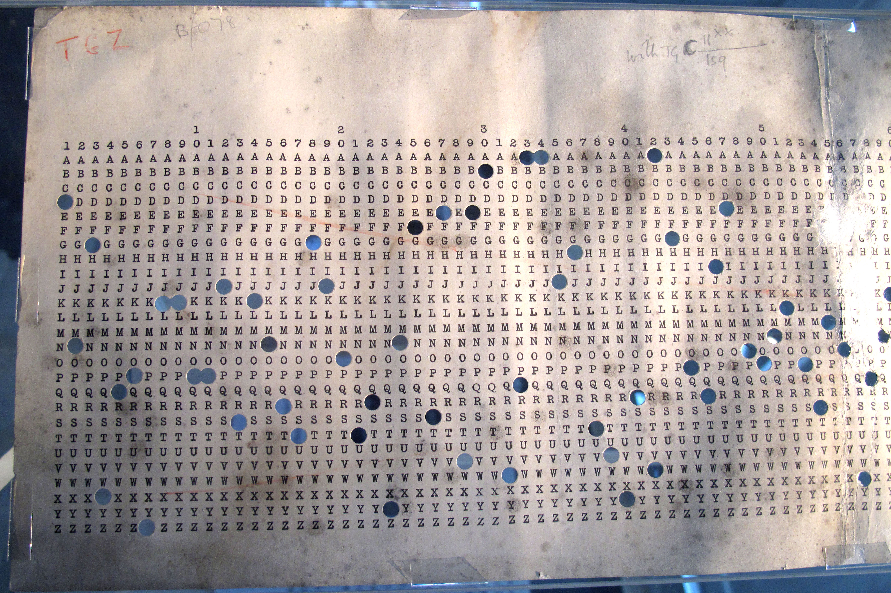

A counting game, an urn, and a code-break. Each is the same arithmetic in a different costume.
A patient walks into a clinic. The test for a particular disease is ninety-nine percent accurate. The patient tests positive. The disease has one percent prevalence in the population. What is the probability that the patient is sick?
Almost everyone says ninety-nine percent. Doctors say ninety-nine percent. The answer is closer to fifty. This is not a trick question. The test is doing what it is supposed to do. Counting beats algebra.
The sample below contains a hundred sick people. The healthy population scales with the prevalence. The rarer the disease, the larger the sample, and the longer the line of healthy faces you have to walk past to find the sick ones. The amber outline marks the hundred sick. You can count them.
Here is the same arithmetic, in algebra. The probability of A given that you have observed B equals the probability of B given A, times the probability of A by itself, divided by the probability of B by itself. The top counts the cases where both are true. The bottom counts every case where B is true. Divide. That is the whole theorem.
For the patient in the clinic, A is the disease and B is the positive test. P(A) is the prevalence, one percent. P(B|A) is the sensitivity, ninety-nine percent. P(B) is what you computed by counting the orange and bright red dots together. The output, P(A|B), is what the patient actually wanted to know.
The grid you just moved was Bayes' theorem in costume. The formula and the dots are the same calculation.
Two urns. One is mostly red. The other is mostly blue. A coin flip puts one of them in front of you. The coin is hidden. You draw a ball, look at the colour, and put it back. After every draw, your belief about which urn you are facing should change a little.
One ball tells you almost nothing. Twenty balls tell you almost everything. The same arithmetic appears in the next game, with letters in place of balls.
There is a deeply useful trick that uses this same urn arithmetic. Suppose you want to know what fraction of a population uses drugs. People will not answer the question honestly. So you do not ask it directly. You hand each respondent a card, drawn privately from a shuffled deck. Some cards say "tell the truth." Some say "lie." The respondent reads the card in private and answers your question accordingly. You record only the answer. You never see the card.
You know the deck. If seventy percent of cards say "truth" and thirty percent say "lie," and you collected forty percent "yes" answers across the survey, the actual prevalence works out to twenty-five percent. The randomness in the deck does the same work as the randomness in the urn draw. Each answer alone is meaningless. The aggregate is exact. The trick fails only if the deck is fifty-fifty, where the arithmetic has no asymmetry to bite on.
The method is called Randomized Response. Stanley Warner introduced it in 1965. The Leipzig sociologist Ivar Krumpal and his collaborators have used it across the sensitive-topic catalogue: doping among athletes, plagiarism in student work, xenophobic and anti-Semitic attitudes in the general population. In every case, direct questioning underreports. The arithmetic of the urn works on humans who would rather not be counted.
During the Second World War, the British codebreakers at Bletchley Park were reading encrypted German messages. The encryption machine was Enigma, which scrambled each letter through a set of rotors that advanced after every keystroke. The Germans changed the rotor settings every day. Alan Turing's team had to recover the new settings from intercepted ciphertext, fresh, every morning. Banburismus was one of their methods.
Two intercepted strings. They are either independent random text, or they were enciphered with the same key. If the key is the same, matching letters at the same position happen slightly more often than chance. One match is almost nothing. Sixty matches are everything.
Each match deposits a small amount of decibans. Each miss withdraws a tiny one. The running total is your evidence. When the total crosses plus ten, declare same-key. When it crosses minus ten, declare independent. Between them, keep collecting.
The name "Banburismus" is not a joke. It comes from Banbury, a town in Oxfordshire about thirty miles from Bletchley, where the long paper strips for the procedure were printed. Operators laid them over each other and counted the matches by hand. The same arithmetic the canvas just did.

The unit itself, the ban, has been quietly renamed. Ralph Hartley at Bell Labs proposed essentially the same base-ten measure of information in 1928, twelve years before Alan Turing and I. J. Good defined the ban at Bletchley. The modern term for the unit is therefore the hartley, with the ban surviving mostly as a historical footnote. Information theory today mostly uses bits, base two, because computers use bits. But for human-readable Bayesian arithmetic, the deciban is still the right size of thing. Small enough that one weak coincidence weighs a few decibans, large enough that a confident conclusion is a few tens.
Spam filters were the first widely deployed Bayesian classifier in consumer software. Paul Graham wrote an essay in 2002 called "A Plan for Spam." Within a year his approach was running in millions of mailboxes. The math counts the words. Each word has a prior probability of appearing in spam versus in legitimate mail. Multiply across the message. The posterior tells you which folder it belongs in. It is the urn game with thirty thousand urns and one of them is your inbox.
The same arithmetic put Sally Clark in prison in 1999 after two of her infant sons died of sudden infant death syndrome. The expert witness multiplied a rare-event probability by itself, as if the two deaths were independent. They were not. She served three years before the conviction was overturned. The expert misused the same rule that should have protected her, and she never recovered. She died in 2007.
Naive Bayes still beats most things on small text datasets. The naive part is its assumption that the features are independent, which they never are. The math should not work. It works anyway. The field has been quietly embarrassed by this for thirty years.
Three games. One piece of arithmetic. The mammogram is Bayes applied to a single observation. The urn is Bayes applied to a sequence of observations. Banburismus is Bayes applied to text whose author wanted to hide it. The unit of evidence does not change. The number of decibans you need to act does.
Bayes is the arithmetic of changing your mind.